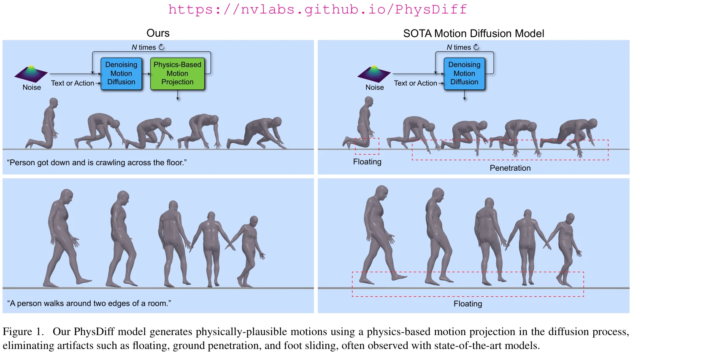
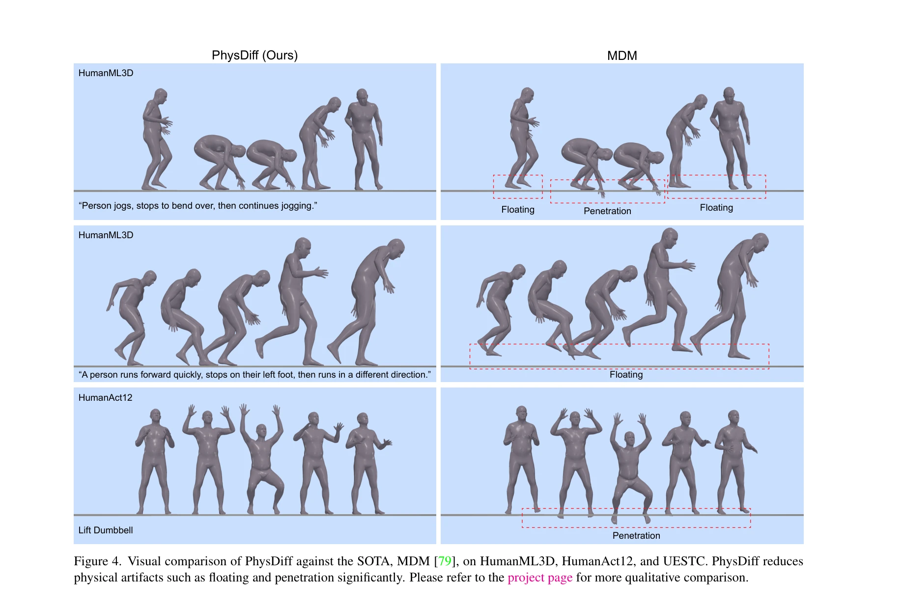
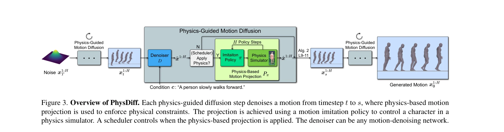

저자: Ye Yuan, Jiaming Song, Umar Iqbal, Arash Vahdat, Jan Kautz | 날짜: 2022-12-05 | URL: https://arxiv.org/abs/2212.02500

Figure 1. Our PhysDiff model generates physically-plausible motions using a physics-based motion projection in the diffu
PhysDiff는 diffusion 과정에 물리 기반 motion projection 모듈을 통합하여 physically-plausible human motion을 생성하는 physics-guided motion diffusion 모델이다. 기존 motion diffusion 모델의 floating, foot sliding, ground penetration 같은 물리적 artifacts를 제거한다.

Figure 4. Visual comparison of PhysDiff against the SOTA, MDM [79], on HumanML3D, HumanAct12, and UESTC. PhysDiff reduce

Figure 3. Overview of PhysDiff. Each physics-guided diffusion step denoises a motion from timestep t to s, where physics
총평: PhysDiff는 human motion generation에 physics 제약을 systematically 통합하여 physically-plausible motion 생성의 핵심 문제를 해결한 혁신적 연구이다. Iterative projection 전략과 철저한 실험 분석이 학계에 중요한 기여를 제공하며, 실제 animation/VR 응용의 현실화를 크게 앞당긴다.